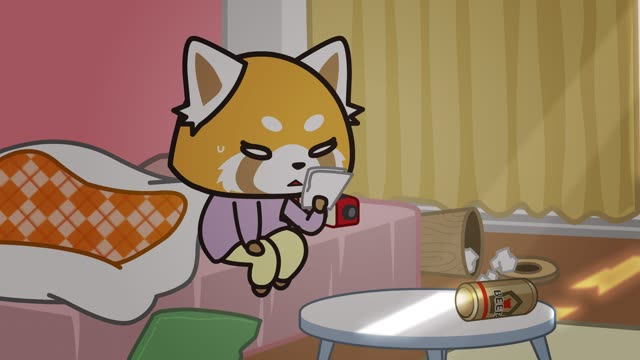
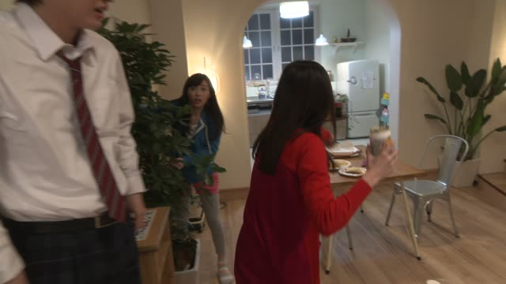

の (Noun left out)

Kino's Journey · Episode 10
あなたのです
"It's yours."
の after a person means "'s" or "my": 私の傘, "my umbrella". When everyone already knows which thing you mean, just drop it: 私の傘 → 私の, "mine".
On this card, the thing is right there, so あなたの is enough: "it's yours". The question works the same way: 誰の？, "whose?".
Polite or casual only shows at the end: 私のです / 私のだ / just 私の.
Last Samurai Standing · Episode 1
俺のだ！
"It's mine!"
The casual form, with だ. On this card, he grabs back his wooden tag: 俺の (mine), the tag itself left out.
Quick Examples
An umbrella was left in the office kitchen. Someone holds it up.
A: この傘、誰のですか。
B: あ、私のです。
A: "Whose umbrella is this?" B: "Oh, it's mine."
The umbrella is right there, so B doesn't need to say 傘 again.
PoliteA coworker finds a key on the desk.
その鍵、田中さんのですよ。
"That key is Tanaka's."
Works with names too: 田中さんの = "Tanaka's".
PoliteYour little brother reaches for the last pudding in the fridge.
それ、私の！
"That's mine!"
CasualA phone rings on the table. Your friend looks at you.
俺のじゃないよ。
"It's not mine."
Negative: 俺の + じゃない.
CasualWith and without
これは私の本です。
"This is my book." You name the thing.
これは私のです。
"This is mine." The book is right there, so you leave it out.
Examples from Media

Aggretsuko · Season 1, Episode 9
私のじゃない。
"It's not mine."
She finds a handkerchief she's never seen. 私のじゃない: not mine.

Good Morning Call · Episode 7
あっ 私のだ。
"Oh, it's mine."
Midnight Diner: Tokyo Stories · Season 2, Episode 3
いや ちょっ… それ 僕の！
"Hey, wait... that's mine!"
それ僕の: "that, mine", no だ at all.
Kekkon Dekinai Otoko · Episode 2
ほら 焦げてる それ お前のだろ。
"Look, it's burnt. That one's yours, right?"
At a yakiniku grill: the burnt piece is お前の.
Kekkon Dekinai Otoko · Episode 3
うん 誰のかな まあ いっか。
"Hmm, whose could it be? Oh well."
誰の: "whose", the thing left out.

Shirokuma Cafe · Episode 30
やっぱり僕のでしょ。
"It's mine after all, right?"
僕の = mine, the noun is left out.

Shirokuma Cafe · Episode 14
もっとかっこいいのがいいな。
"I'd like a cooler one."
の stands in for the thing being talked about.
Good Morning Call · Episode 3
え？ 誰が誰の？
"Huh? Who's whose?"
Asked if she's his girlfriend: 誰が誰の (彼女)? The noun is left out after 誰の.
Further Reading
A Dictionary of Basic Japanese Grammar
Entry "no²" (one, pronoun) · pp. 315–317
Tae Kim's Guide to Japanese Grammar
Noun-related Particles · The 「の」 particle